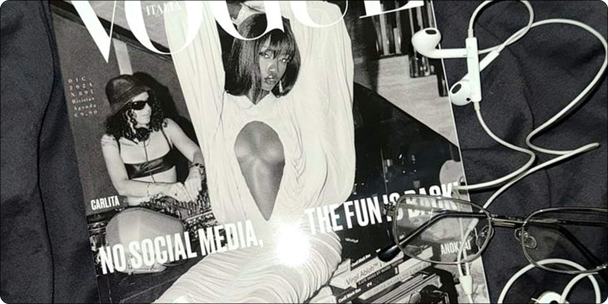
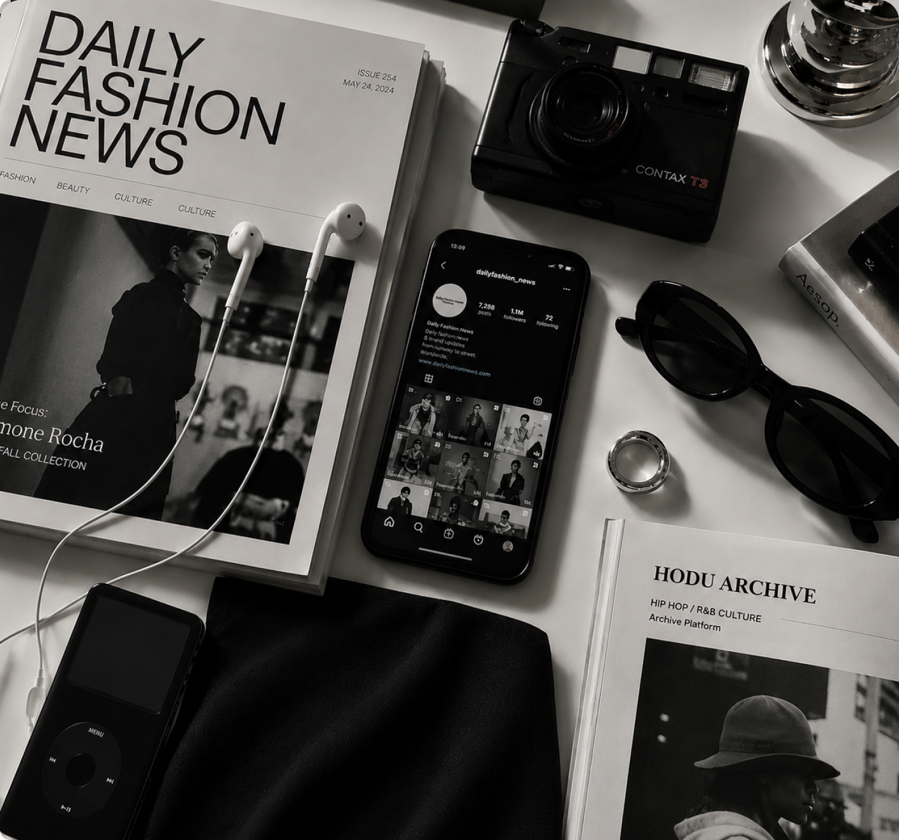

Fashion · Music · Culture Archive
패션 · 음악 · 트렌드 아카이브
패션, 트렌드, 음악, 유튜브 콘텐츠를 한곳에 모아
탐색할 수 있는 개인 취향 아카이브 홈페이지
Selected platforms and inspirations

검색 결과가 없습니다.
Selected Platforms
Discover platforms that inspire my daily fashion and culture archive

Curated Reads
Selected stories from fashion, music and internet culture
